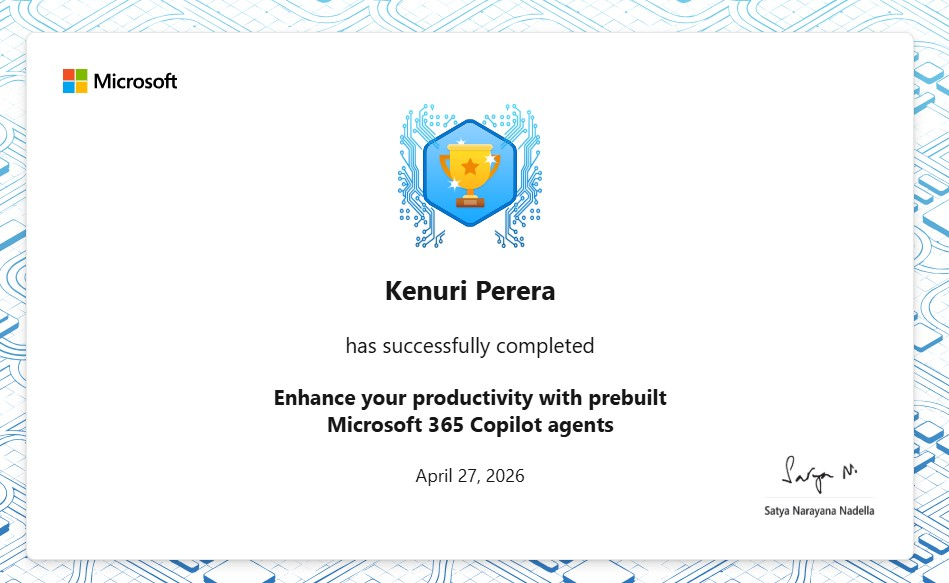
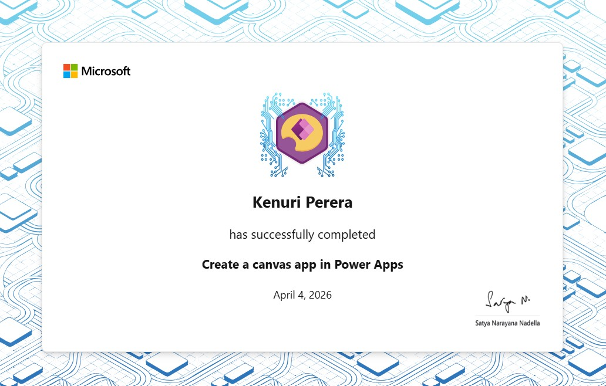
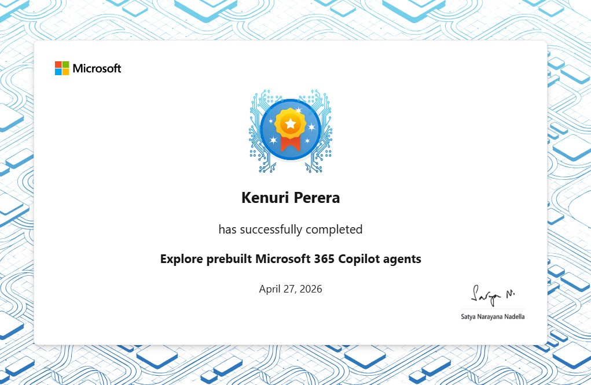
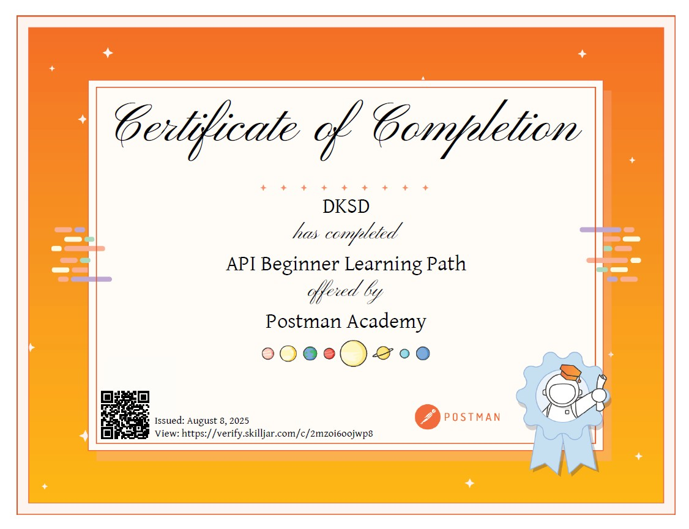
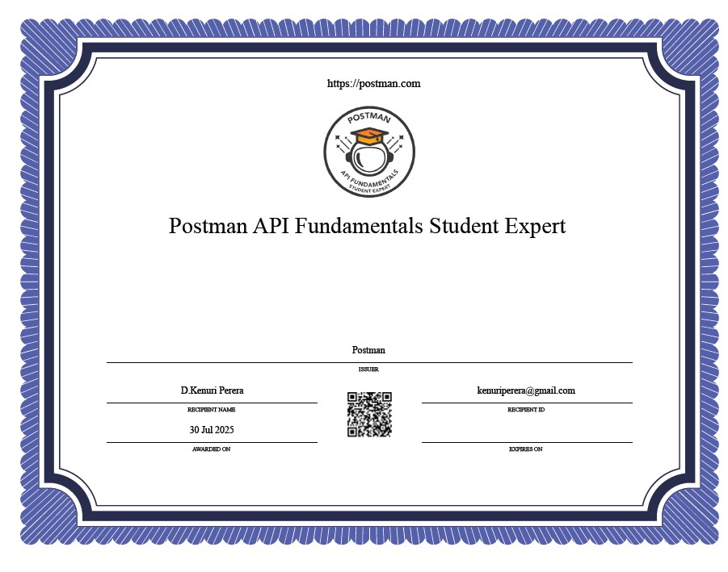
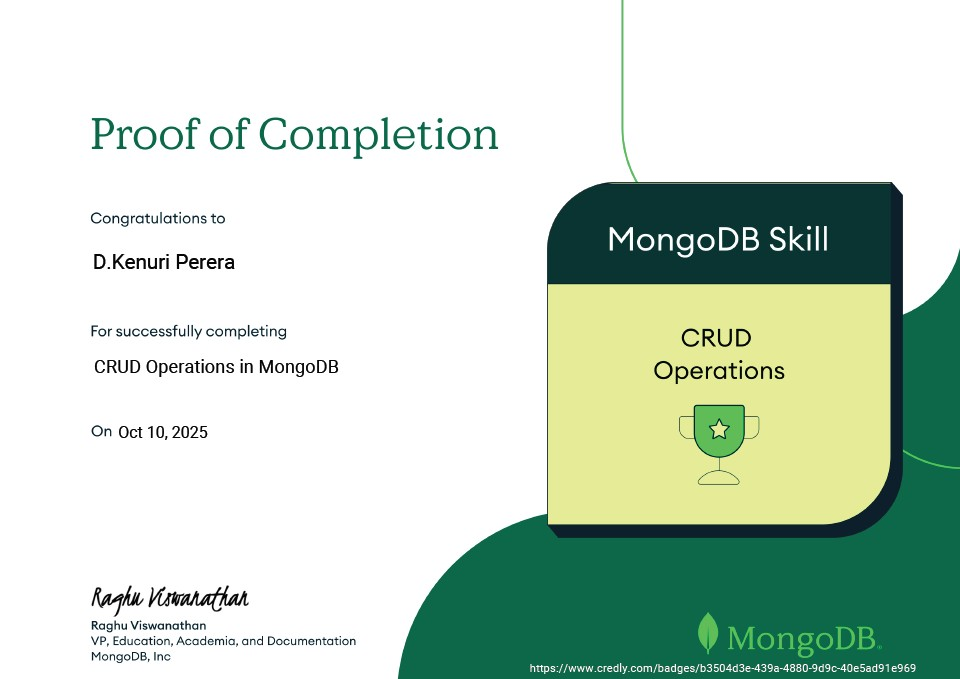
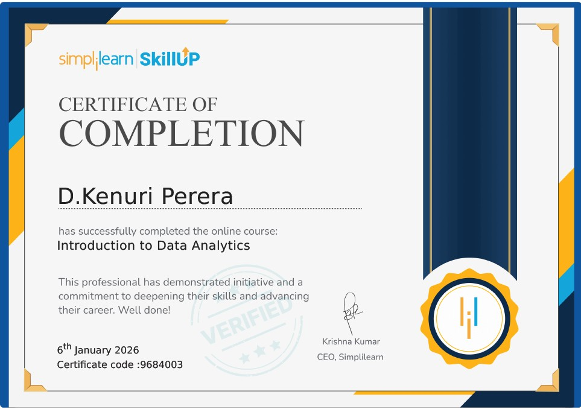
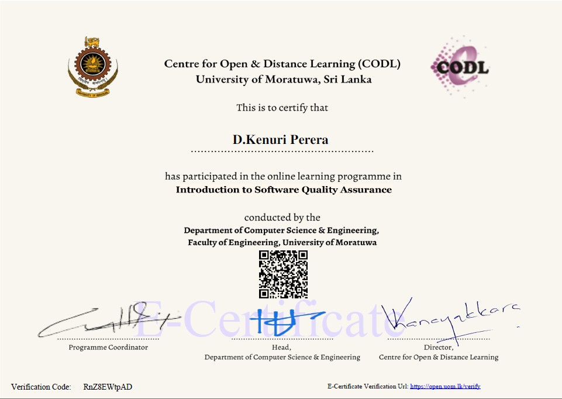

Intern Business Analyst | 4th Year IT Undergraduate
Bridging Business & Technology with Data-Driven Solutions
I am a 4th-year IT undergraduate at SLIIT, currently working as an Intern Business Analyst at SLT Digital Labs. I specialize in bridging business needs with technical solutions using agile practices and data-driven analysis.
With a strong foundation in both technical and business domains, I'm passionate about driving innovation and creating impactful solutions that solve real-world problems.
A structured roadmap from where I am now to where I aspire to be — grounded in skills, certifications, and real-world experience.
2026
Strengthen Business Analysis & Agile skills
2026 — 2028
Become a Senior Business Analyst
2028 — 2032
Move into Product Management / Tech Leadership
Finish BSc. (Hons) IT at SLIIT and the external degree at the University of Moratuwa. Deepen knowledge of Business Analysis methodologies (BABOK, process mapping, use-case modelling). Strengthen agile and SCRUM skills through the current internship at SLT Digital Labs. Target ISTQB Foundation Level certification.
Leverage the internship to gain hands-on exposure to real-world requirement workshops, stakeholder management, and sprint ceremonies. Determine whether a pure BA path or a hybrid BA/QA track is the right direction. Build a professional network within the Sri Lankan tech industry and explore opportunities in FinTech companies.
Progress to a Senior Business Analyst role with ownership over a product domain. Master stakeholder communication, high-quality BRD and user story writing, and develop a reputation for bridging technical and non-technical teams. Begin working toward CBAP certification and consider postgraduate study in Business Analytics.
Transition into a Product Manager or technology leadership role with strategic ownership over a product line. Explore leadership opportunities managing a BA team or leading requirement streams on large-scale projects. Contribute to products with measurable financial and social impact across the region.
ISTQB Foundation · Agile BA · CBAP · AWS Cloud Practitioner
Financial Technology · Healthcare IT · Enterprise Software · Data Analytics
AIESEC alumni · SLIIT industry partners · LinkedIn community
A selection of academic and personal projects demonstrating full-stack development, mobile engineering, and UI/UX design skills.
Property Management System
A comprehensive system for managing property listings, tenant information, and maintenance requests.
Management System
System for streamlining apparel production, inventory tracking, and supply chain management.
Mobile Application
A productivity mobile app designed to help users manage tasks efficiently with focus timer features.
Figma Design
UI/UX design for a digital book discovery and reading platform with modern design principles.
Courses and certifications completed within the last year to improve both technical and professional skills.

Earned by completing the official Postman learning path — covering REST APIs, request building, test scripting, and API documentation. This certification supports my Business Analysis career path by enabling technical fluency with development teams.






